Mini project 2 · CMU 16-833
Mini project 2 · CMU 16-833
SLAM using an extended Kalman filter.
EKF-SLAM on a 2D dataset of range-and-bearing measurements, estimating the robot's trajectory and the positions of six landmarks simultaneously, and carrying an explicit uncertainty for every one of them.
The setup
Where the particle filter mini project represented belief with thousands of samples, the EKF takes the opposite approach: one Gaussian, a mean and a covariance, propagated analytically. The state vector holds the robot pose and every landmark position at once, which is what makes it SLAM rather than localization, and the covariance matrix over that joint state is where the interesting behavior lives.
The data gives two measurements per landmark, bearing and range, with six landmarks observed across the entire sequence. The filter alternates between a prediction step that propagates the pose through the motion model and inflates uncertainty, and an update step that folds in each landmark observation and shrinks it back down.
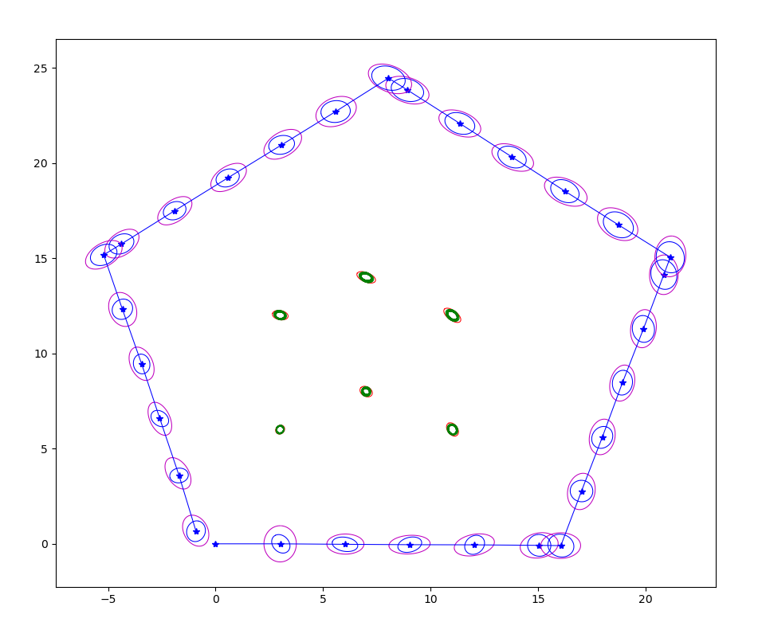
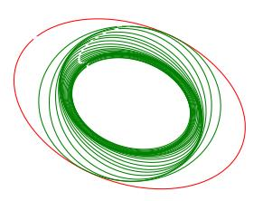
What the covariances tell you
The predicted covariance of both the robot poses and the landmarks is consistently higher than the covariance after the update step. That reduction comes from the Kalman gain, which weights the measurement against the previous state estimate, making the EKF result a kind of weighted average of the two.
It is worth stating the two limiting cases plainly, because they are the whole intuition behind the filter. If sensor uncertainty is very low, the Kalman gain takes a higher value, the measurement dominates, and the sensor effectively tells you where you are. If instead the previous state uncertainty is very low, a lower gain weights toward the prior estimate and most of the measurement is ignored. The filter is continuously deciding which source to trust.
You can see this in the map: landmarks further from the robot are initialized with higher covariance, and as the robot traverses past them it predicts and corrects more accurately, shrinking those ellipses.
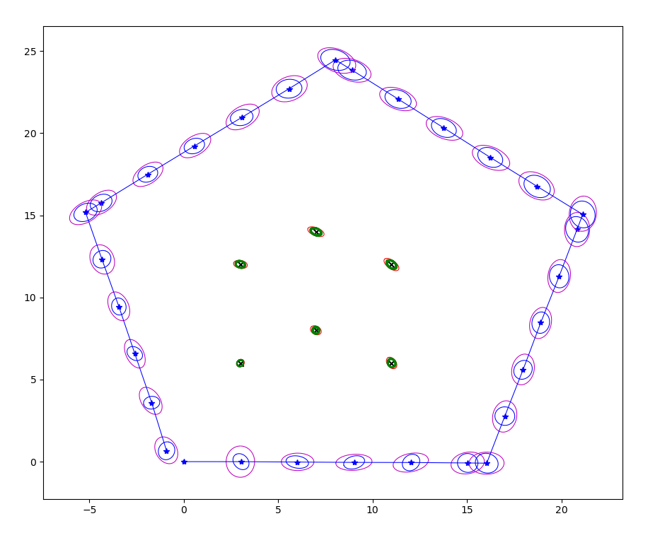
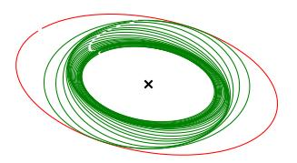
Every ground-truth landmark falls inside its smallest corresponding ellipse, meaning the estimated positions land very close to the truth. Quantifying that with two distances:
The two measure different things. Euclidean distance is plain geometric distance, and in 2D it says we are very close to ground truth. Mahalanobis distance measures the distance between a point and a distribution, scaled by that distribution's own uncertainty. These values being very low means the mean of the resulting distribution sits very close to the landmark's true location, not merely that the numbers are small.
Why the zeros fill in
One of the more instructive parts of this project: the zero terms in the initial landmark covariance matrix become non-zero in the final state covariance. That happens because the landmarks become correlated with each other as the robot state updates, and correlated with the robot state itself, since the landmark covariance was initialized accounting for both the robot's initial pose and the initial measurement covariance. As the robot moves, estimates improve for landmarks near its field of view, where variance in bearing and range is lower.
Which exposes an assumption worth naming: when setting the initial cross-covariance we assume zero cross-correlation between landmarks and the robot state, because we set those entries to zero. That assumption is not necessarily correct. It is convenient, and the filter recovers from it, but it is an approximation baked into the initialization.
How noise parameters shape the result
The bulk of the work was a systematic study of what each noise parameter actually does to the covariance ellipses. Scaling the measurement noise up by ten inflates uncertainty in both the robot pose and the landmarks, with the pose covariance growing in the angular direction. Halving it shrinks every ellipse dramatically.
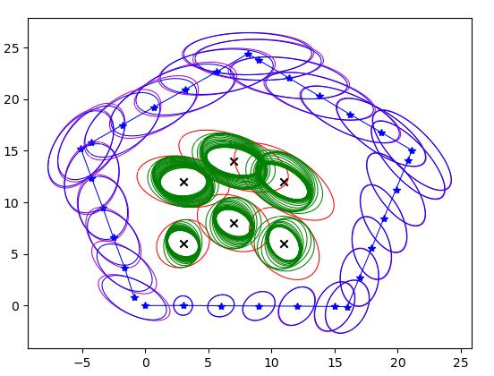
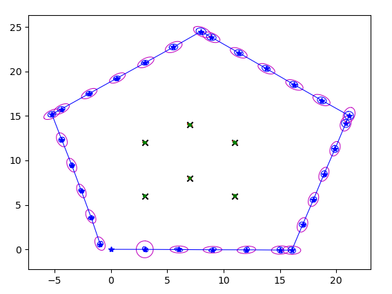
Scaling the motion noise instead separates the two effects cleanly. Raising σx and σy by five inflates the robot's pose covariance while the landmark variance stays relatively small; dropping them to a tenth shrinks the pose covariance drastically while landmark variance stays roughly unchanged, since those sigmas were untouched.
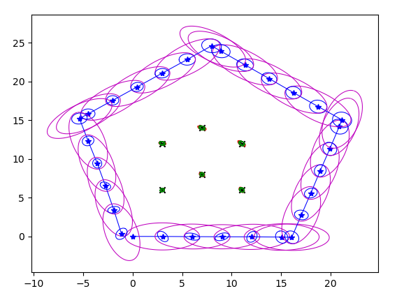
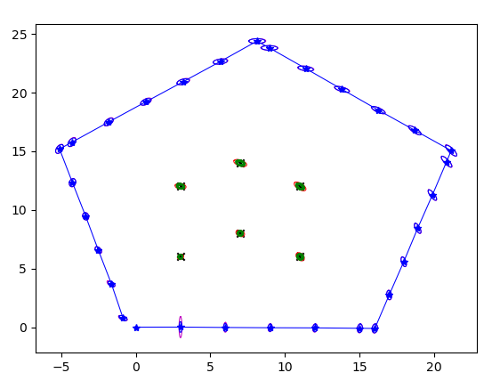
Isolating single parameters is where the geometry becomes legible. Raising only σx grows the covariance specifically in the x direction as the robot updates its pose. Raising only σr grows it along the range direction the robot faces at initialization, elongating the landmark ellipses along that axis, with the further landmarks showing more elongation in the angular direction too.
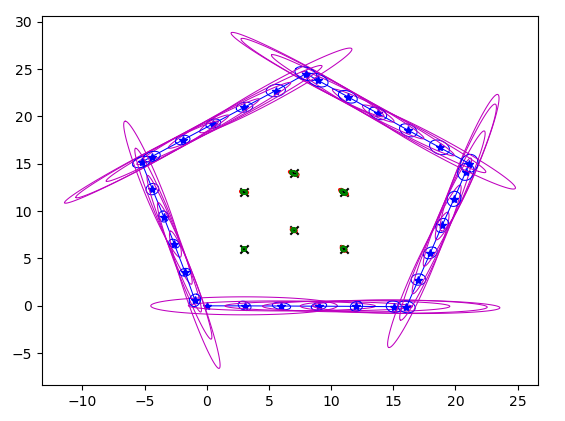
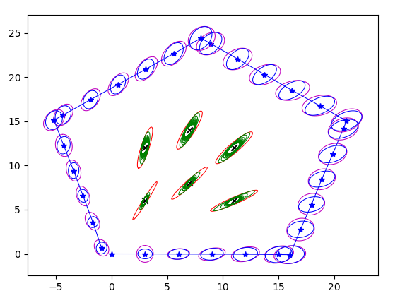
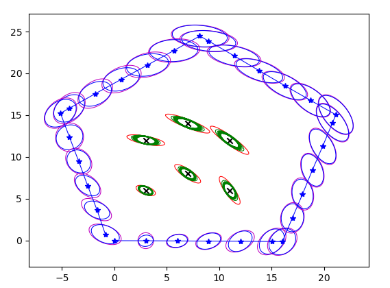
The pattern across all of these is that the ellipses are not abstract error bars. They point in the direction the corresponding uncertainty actually lives, and distance from the robot amplifies the angular component, because a fixed bearing error subtends more space the further out you go.
Scaling problem: too many landmarks
EKF-SLAM's known weakness is that the covariance matrix grows quadratically with the landmark count, so the final question was what to do when landmarks keep accumulating. I proposed three approaches:
- Update landmarks by proximity. Optimize control inputs so the robot properly explores an area, get reasonable estimates for the landmarks there, then move on, replacing well-estimated landmarks in the matrix once a threshold is met. This bounds the number of landmarks in the robot's working set, but requires reinitializing landmarks against the current pose estimate, and leans on loop closure to recover the forgotten ones. The cost is speed, since it needs redundant exploration.
- Preallocate and stay sparse. Initialize a very large number of landmarks and fill the sparse matrix as they are observed, using sparse matrix techniques for computation speed. This fails once the landmark count is genuinely unbounded.
- Cluster. Approximate groups of landmarks estimated to be close together by a single representative center landmark, paired with the approaches above to keep the active count low.